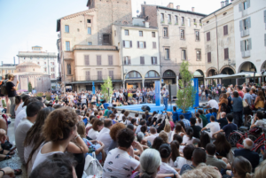
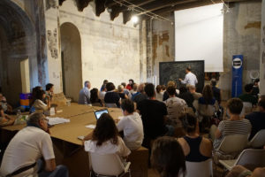
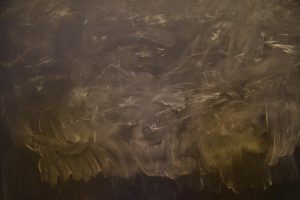

{#4} Scienceground 1.5: Microbes
«Microbes were doing things in the lab under [Pasteur’s] experimental skills which they didn’t do before. […] When you get into the science of microbes, or viruses, you get into associations which are part of what people call “society”. […] The next step in science communication is not to talk about rationality but to talk about these beings. And if you take bacteria you will develop the whole science and the whole society almost simultaneously»
B. Latour, extracts from an interview at Scienceground, Festivaletteratura, September 2018
Bonjour,
the reason you receive this stream of consciousness is that when it started flooding your mail out of the blue you did not dare oppose, or else that for mysterious reasons you spontaneously subscribed. Thanks! If you don’t remember what it is all about, read the first three episodes here. To unsubscribe, find below the proper button and you will be ANNIHILATED as fast as light travels in our neurocortical network – and after some random procrastination time. But please let us know what upsets you.

We are happy to announce that Scienceground 1.5 is going to take place at Festivaletteratura in Mantova, Italy, September 4th – 8th (the complete program of the Festival – in Italian –can be downloaded here. Our next edition will be entirely devoted to the building blocks of our own selves*: microbes. We were inspired by an interview with Bruno Latour who proposed:
I was in Palazzo Te today, and it’s very amusing to compare 16th century period and now because we are very much in the same sort of situation: trying to find an order for multiplicity of beings. It’s much more interesting than inside the moment, the parenthesis – so to speak – when we were obsessed by the scientific worldview. […] If you have to rebuild Palazzo Te now, what will be the program? I understand that it was one of the Gonzaga who wrote the program: this room I want it with Ercule, etc. Now if you say I want one room with bacteria… what would be the shape of the space and what sort of disciplines will you bring in, and what sort of images will you bring with you? It would be almost completely different from what bacteria was thirty years ago. And it will be different bacteria, in addition.
Thus in the spaces made avaiable by the school Isabella d’Este we will set up the the Hall of Bacteria, the Room of Mildew, the Atrium of Yeast, the Cloister of Viruses, and there we will engage in all sorts of fermentations. In particular, two international guests will come share their insights: Sally C. Davies, former Chief Medical Officer of England who dedicated her mandate to fighting and diffusing information on the growing global threat of antimicrobial drug resistance, and César Enrique Giraldo Herrera, research affiliate at the University of Oxford and expert of the mutual translations between amerindian forms of knowledge and microbiology. Many more people will participate and interact with ExTemporanea, the growing scientific community of students and researchers who are trying to create a open-minded dialogue between the sciences. Full program soon to be announced!
*Indeed, according to philospher in science Thomas Pradeu every organism is a chimera, a mixed living thing made of entities of different origins and held together by the immune system. See The Limits of the Self: Immunology and Biological Identity (Oxford University Press, 2012), one of the many books on our shelves.
To come prepared for an informed discussion at the festival, we like to read together books, papers, and all that. The first book on the bedside was Semmelweis by Céline, and the discussion is (slowly, but steadily) evolving on our blog.
The next book to take with you under the beach umbrella is Spillover by David Quammen. The rules of the game are:
- Lend or donate your copy of Semmelweis to whomever might be interested;
- Buy, borrow, or (if strictly necessary) steal a copy of Spillover;
- Read it within four weeks from now;
- Compulse further references related to the book and its contents;
- Wait for further instructions.
The word “spillover” indicates the precise moment when a pathogen executes an evolutive step by moving from one species to another. The history of spillovers tells us about human pressure on the environment, the story of how Spillover was written tells us about narrative nonfiction, a new form of writing which is not an academic or specialized report, but uses the means of literary narration to give factual recounts (think of Gomorra): what does the emergence of this genre tell us about the access and spreading of knowledge?
At Scienceground, once again using Latour’s words, we want to “use history as a brain scientist uses a rat, cutting through it in order to follow the mechanisms that may allow [us] to understand at once the content of a science and its context” (B. Latour, The Pasteurization of France, Harvard University Press, 1988 – also on our shelves). On our way to the Northway Passage…

«I am not a scientist, I still have a lot to learn, and for this reason I cannot afford to have too many certainties about anything in particular. The idea I have of the world keeps changing.»
Scienceground goes international! With these words starts the talk that one of the volunteers of Scienceground 2 gave at the Festival of Science in Sofia, Bulgaria, guest of the Italian Institute of Culture.
«The manifestation took place in one of the congress rooms of the High-Tech Park, in the periphery of Sofia, among fountains, trees, glass and steel palaces, malls, buildings under constructions, and buildings whose construction has been abandoned. […] The opinions on the social value of science in democracy were similar to those I already heard last year at Scienceground. It is true that we tend to hang out with the social niche of people who share our same interests and opinions, but the sensation was that there is some common feeling.»
You can find more here (in Italian)

Scienceground is a very fluid and experimental project, open to all contributions. Don’t be shy and make yourself heard, we need your enthusiasm!
Stay tuned
ET
Comments